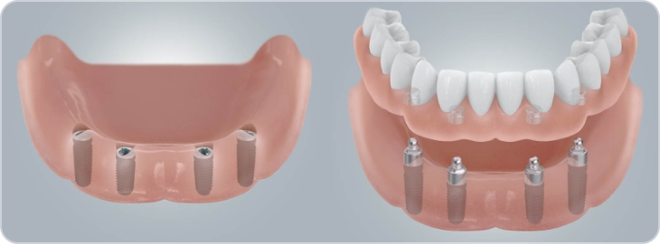
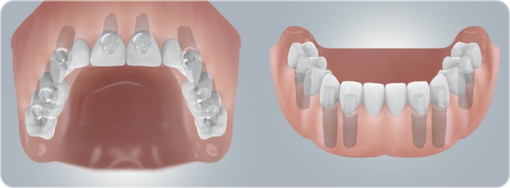

Съёмное протезирование на имплантах на нижней челюсти проводится на 2-4 имплантах. Самым распространённым вариантом является установка 4 имплантов с шаровидными аттачменами (либо локаторами). Плюсы такого метода заключаются
в хорошей фиксации протеза, лёгкой гигиене полости рта, простоте конструкции, а, как следствие, в ее недороговизне.
Съёмный протез на 2 имплантах с аттачменами используется в тех случаях, когда недостаточно костной ткани
для установки 4-х, фиксация протеза в таком случае хуже. Минусы такого метода лечения заключаются в том, что протез распределяет нагрузку не только на импланты, но и на десну. Под давлением протеза десна атрофируется, поэтому необходимо
делать перебазировку протеза в среднем раз в год. Также ослабляется крепление на аттачменах, необходимо периодически заменять удерживающие матрицы. Срок службы самого протеза составляет около 5 лет.

Несъёмное протезирование нижней челюсти проводится на 6 имплантах при классической имплантации. Возможно также восстановить зубы на 4 имплантах по методике all-on-4, в таком случае 2 из 4 имплантов ставятся под углом до 45 градусов.
Методика имеет свои плюсы и минусы. Про All-on-4 будет написано дальше в этой статье.
Несъёмное протезирование полностью имитирует свои собственные зубы и легче всего переносится психологически. На период интеграции имплантов
пациент пользуется временным съёмным протезом, либо имплантация зубов проводится с одномоментной нагрузкой несъёмным пластмассовым протезом.
Срок службы пластмассового протеза – 1 год. Его можно заменить на металлокерамический,
либо циркониевый после полного заживления имплантов. На нижней челюсти через 3 месяца. Сами импланты при этом не затрагиваются.
 Высокий уровень комфортности
Высокий уровень комфортности